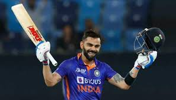
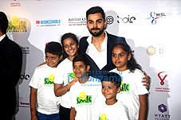

Early Life
Virat Kohli was born on 5 November 1988 in Delhi into a Punjabi Hindu family. His father, Prem Kohli, worked as a criminal lawyer and his mother, Saroj Kohli, served as a housewife. He has an older brother, Vikas, and an older sister, Bhawna.Kohli's formative years were spent in the Uttam Nagar and commenced his early education at Vishal Bharti Public School.According to his family, Kohli exhibited an early affinity for cricket as a mere three-year-old. He would pick up a cricket bat, display natural skill, and request his father to bowl to him.On the 18th of December 2006, Kohli experienced the loss of his father due to a cerebral attack.During his childhood, his father played a crucial role in supporting his cricket training. Kohli has credited his father as the one who drove him to practice every day. He has expressed his feelings of missing his father's presence at times.Following the demise of Kohli's father, his mother observed a significant change in his personality. Kohli appeared to become more mature overnight, and he began taking every cricket match seriously. He harboured an aversion to exclusion from games and appeared to channel his entire existence into the pursuit of cricket following his father's untimely demise.Kohli's family resided in Meera Bagh, Paschim Vihar until the year 2015, after which they relocated to Gurgaon.
Domestic Career
 Kohli's junior cricket career kicked off in October 2002 at the Luhnu cricket ground in a Polly Umrigar match against the host state of Himachal Pradesh. In his debut match, Kohli managed to score a total of fifteen runs. His first half-century in national cricket came at Ferozeshah Kotla, where he scored 70 runs against Harayana.By the end of the season, Kohli had amassed a total of 172 runs, emerging as the highest run-scorer for his side with an average of 34.40.During the 2003–04 season, Kohli was appointed as the captain of the under-15 team. In his first match of the season, he scored 54 runs in Delhi's victory over Himachal Pradesh. In the next fixture against Jammu and Kashmir, Kohli scored his maiden century with a score of 119 in a BCCI-conducted game. By the end of the season, he had amassed a total of 390 runs at an average of 78, which included two centuries.Towards the end of 2004, Kohli earned selection for the 2004–05 Vijay Merchant Trophy with the Delhi under-17 team. In the four matches that he played, Kohli accumulated a total of 470 runs, with his highest score being 251* runs. The team's coach, Ajit Chaudhary, lauded his performance and was particularly impressed with his temperament on the field. In the 2005–06 season, Kohli commenced his innings with a score of 227 against Punjab. Following their victory over Uttar Pradesh in the quarter-finals, Delhi was scheduled to play against Baroda in the semi-finals. The team had high expectations from Kohli, who had promised his coach to finish the job. True to his word, Kohli went on to score 228 runs, leading Delhi to victory. The team later secured the tournament with a five-wicket win over Mumbai, where he contributed with a half-century in the first innings. He ended as the highest run-scorer with a total of 757 runs from 7 matches, averaging 84.11.Philantrophy
 In 2013, Kohli established the "Virat Kohli Foundation" with a philanthropic objective to support underprivileged children.The foundation collaborates with a selected group of NGOs to increase awareness and gather support for various causes that are instrumental in advancing their mission of promoting the welfare and well-being of these children.In 2014, the foundation participated in a charity auction organized by eBay and Save the Children India, the proceeds of which were directed towards the education and healthcare of underprivileged children.Kohli is dedicated to creating a brighter future for children by implementing sports-based programs and providing them with necessary resources, leveraging his connections and partnerships to uplift marginalized segments of society.In 2016, the Virat Kohli Foundation entered into a partnership with Smile Foundation to promote the empowerment of underprivileged children and young people. To kickstart this initiative, Kohli organized a philanthropic dinner at Hyatt Regency in Mumbai, graced by the presence of cricketing luminaries such as MS Dhoni, Shikhar Dhawan, Yuvraj Singh, Ajinkya Rahane, and KL Rahul to support the cause of child and youth empowerment.To advance the goals of the Swachh Bharat Mission (SBM), which aims at creating a cleaner India, Kohli and the Indian cricket team, in collaboration with Anurag Sharma, undertook a cleaning initiative at the Eden Gardens on the occasion of Gandhi Jayanti of 2016.